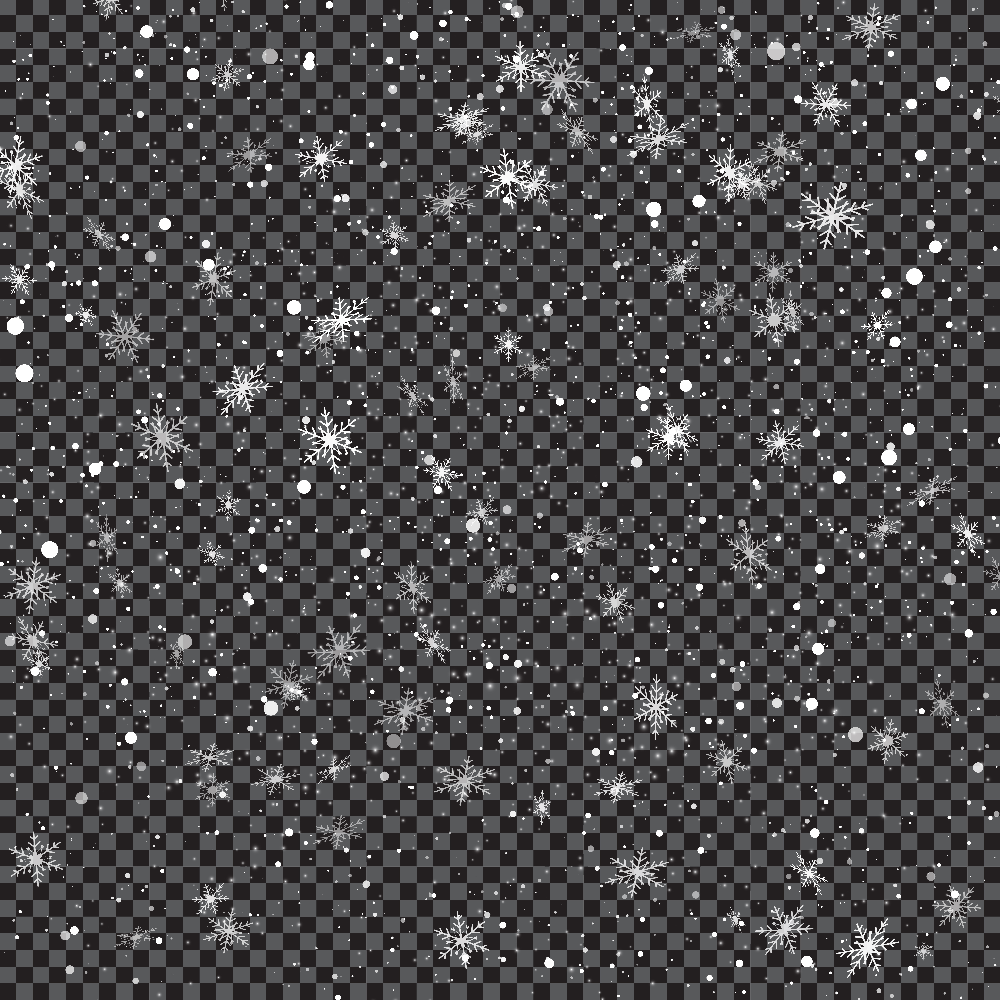

Jul Godingar

Lavendel kanniner
Lavendel kanniner är de små djuren du kan finna längst med nordpolens kalaste skogar. Dom besiter magiska läkande krafter, som de får från landets mest sälsynta lavendel. De är extremt skygga men har ett starkt band med tomtens nisar som hjälper kanninerna att hitta lavendel året om.

Småtomtar
Småtomtarna är mest kända för att hjälpa huvudtomten att göra leksaker, till alla världens barn, alla 365 dagar om året. De är busiga och smått klantiga, men samtidigt några av de snällaste varelserna på hela nordpolen!

Tomte Dörrar
Ta in litte extra mycket julmagi i ditt hem i vinter! Det här är småtomtarnas teloportdörrar. magiska portar som de använder för att hjälpa huvudtomten att leverera julklappar till alla världens barn. Psst! var på din vakt, för det kan hända att en liten tomte smyger fram och tar en polkagris från julgrannen när de får chansen!

Etiketter
De här juletiketterna kommer att smycka årets julklappar med hummor och finess. Snart kommer de även etiketter i fisk och hund bens form för alla djur älskare. Etikettetr för alla - stora som små!
